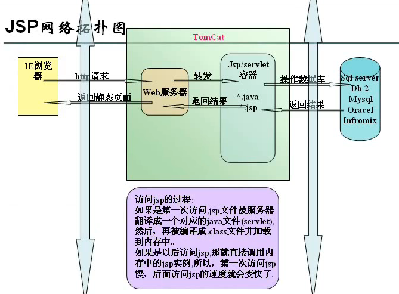
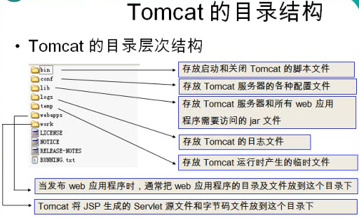
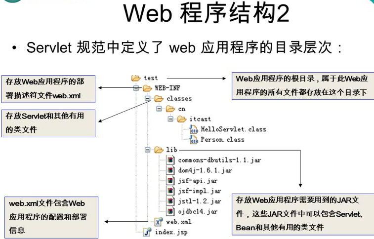

JSP简介
 CoMath
CoMath
为什么要JSP技术?
开发web网站的时候，servlet做界面比较麻烦. JSP 是基于 Servlet API 的，所以拥有 Servlet 拥有的一系列好处.
- jsp运行在服务器端
- jsp（java service page）
- jsp的基础是servlet
- jsp是一个综合技术 jsp=html+css+javascript+java代码+jsp标签(Servlet)
- jsp无需配置，可以直接使用；如果修改了jsp文件，不需要重新reload web应用
- jsp访问方法：http://ip:8080/web应用名/jsp路径
特点：
- 内容的生成和显示相分离
- 可移植性
- 采用标签简化页面开发
- 使用可重用组件
- 完善的存储管理和安全性 
JSP语法基础：
基本元素：
注释(JSP自带的注释规范是隐式注释,HTML/XML的注释是显示注释)
HTML/XML的注释(显示注释)：
<!-- 个注释 -->
<!-- 个注释 ：<%counter++;%>-->
这里会对counter++进行编译,显示编译后的结果 隐式注释：
<%-- 注释 --%>
JSP在编译时不会对<%–和–%>中的进行编译;
Scriptlets中的注释：跟java注释一致.
指令元素
- 页面(page)指令： 页面page指令用于定义JSP文件中的全局属性,一个JSP页面可以包含多个页面指令.除了import指令外其他的页面指令定义的属性或值只能出现一次.
<%@ page attribute="value"%>
其中attribute的可取值为：
- language(定义使用的脚本—语言默认java)、import(定义JSP网页使用的java API)、
- contentType(定义MIME类型和JSP网页的编码方式—默认TYPE=text/html CHARSET=iso-8859-1)、
- pageEncoding(JSP页面的字符编码—默认pageEncoding=“iso-8859-1”)、
区别：contentType—pageEncoding.
- contentType：只能指定网页以什么方式显示
- pageEncoding：除了显示之外还可以以指定形式保存
- session(定义该JSP网页是否可以使用session对象—-默认true)、
- buffer(指定客户输出流的缓冲模式,如果是none,则不缓冲,如果指定数值,就定义了缓冲区的大小)、默认8K
- autoFlush(定义输出流的缓存区是否要自动清除-—默认true)、
- isThreadSafe(定义该JSP页面是否能处理多个请求—默认true)、
- info(定义该JSP网页的相关信息-—默认忽略)、
- errorPage(定义此页面出现意外时的调用的页面—-默认忽略)、跳转到错误页面
- isErrorPage(定义该JSP网页是否为处理意外错误的网页—-默认false)、
- extends().
- include指令： include指令通知容器在当前JSP页面中指定位置包含另一个文件的内容. 被包含的文件内容可以被JSP引擎解析,这种解析发生在编译期间 <%@ include file=“filename”%> include只有这一个属性. 其中filename为包含的文件路径,一般来说是指相对路径. 由于被包含的内容常常是代码片断,因此代码片断的后缀名最好以“f”(表示fragment)结尾,例如.htmlf
- 标签库taglib指令： taglib指令允许页面使用者自定义标签. 先用户开发标签库，为标签库编写.tld配置文件，然后再JSP页面使用自定义标签. <%@ taglib uri=“URL” prefix=“tagPrefix”%> uri 用来表示标签描述符，也就是如何找到标签文件和标签库； tagPrefix 定义了子JSP页面里引用这个标签的前缀.
脚本元素
- 声明(Declaration) 声明就是在JSP程序中声明合法的变量和方法,用<%!和%>来表示)： 当代码只用于单一页面时：
<%!
variable declaration;
method declaration(paramType param,...)
%>
<%!
private static int counter;
public void counterInit(){
counter = 0 ;
};
%>
- 表达式(Expression)—用来吧java数据直接插入到输出：
表达式是位于<%=和%>之间的代码
<%= "你是第"+counter+"次访问" %>
<%= "hello world" %>
Web服务器将其编译成Servlet后，变成：
out.wreite(String.valueOf("hello world"));
相当于JSP页面中的：
out.println("hello world");
注：表达式结束处可以不使用省略号，表达式可以包含表达式.
- 脚本小程序(Scriptlet)—可以在处理请求时间执行的java代码：
Scriptlet则位于<%和%>之间,他们是合法的java代码
<%counter++;%>
动作元素
JSP规范定义了一系列的标准动作. 以jsp作为前缀,例如使用JavaBean的动作元素<jsp:useBean>
<!-- 格式： -->
<jsp:tag attribute=value attribute=value.../>
<!-- 或者 -->
<jsp:tag attribute=value attribute=value...>
...
</jsp:tag>
动作元素是在请求处理阶段起作用的.
- 文本导入标签<jsp:include>
<!-- 格式： -->
<jsp:include page="filename" flush="true"/>
<!-- 或者 -->
<jsp:include page="filename" flush="true">
<jsp:param name="paramName" value="paramValue"/>
...
</jsp:include>
<jsp:param>用于传递一个或者多个参数给动态页面;<jsp:include>动作与<%@include%>指令的不同是：前者包含的内容可以是动态改变的，它在执行时才确定；而后者包含的内容是固定不变的，在编译阶段就已经确定而不能改变.
案例：Login.html、Ex1.jsp、Ex2.jsp
- 页面转发标签<jsp:forward>该操作允许将请求转发到另一个JSP、Servlet或者其他静态资源文件. 请求被转至的资源必须位于同JSP发送请求相同的上下文环境之中. 每当遇到<jsp:forward>操作时，就停止执行当前的JSP，转至执行被转发的资源.
<!-- 格式： -->
<jsp:forward page="uri"/>
<!-- 或者 -->
<jsp:forward>
<jsp:param name="paramName" value="paramValue"/>
...
</jsp:forward>
其中page=“uri” 指明将要定向的文件或url地址,<jsp:param name="paramName" value="paramValue"/>中name指定参数名，value指定参数值. 参数被发送到一个动态文件，参数可以是一个或多个值，而这个文件却必须是动态文件.
案例：Ex3.jsp、Ex4.jsp、Ex5.jsp
- 实例化JavaBean标签jsp:useBean
<!-- 格式： -->
<jsp:useBean id="id" scope="page|request|session|application typeSpec"/>
<!-- id 是大小写相关的名字,用来表示这个实例;scope表示此对象作用的范围；typeSpace可以是以下四者之一：class="className" -->
class="className" type="typeName"
beanName="beanName" type="typeName"
type="typeName"
scope表示Bean的作用域，此属性是可选的，默认是page.
① page： 能够在包含<jsp:useBean>标签的JSP文件以及此文件中的所有静态包含文件中使用Bean，直到页面执行完毕客户端发回响应或转到另一个文件为止. 超出这个范围Bean就失效了.
② request： 如果该Bean不是请求上下文的一部分，将在请求上下文中创建并保存该Bean.
③ session： 从创建Bean开始，就开始在session有效范围内使用这个Bean，这个Bean对于JSP来说是共享的. 但在创建Bean的JSP文件里，page指令必须指定session=True.
④ application： 如果此Bean尚不存在于Web应用程序上下文中，则在应用程序上下文中创建并储存此Bean. application对象在应用服务器启东市就创建了，直到应用服务器关闭. 这个Bean存在于整个application生命周期内，任何在此分享application的JSP文件都能使用同一个Bean. class=“className"代表的是Bean的类路径和类名. 这个class不是抽象的，必须有一个公用的、没有参数的构造器. beanName=“beanName” 表示Bean的名称，而Type=“typeName"则用于指定Bean的类型. type=“typeName"指定雷鸣，既可以是本身，也可以是一个类的父类，或者是一个类的接口. 如果没有使用class或者BeanName指定type，Bean将不会被实例化.
- 设置JavaBean属性标签<jsp:setProperty>
该动作主要用于设定JavaBean的属性，因此必须和useBean一起协作. <jsp:setProperty>标签通过JavaBean给定的
setXXX()方法，在javaBean中设置一个或多个属性值. 利用此动作标签设置属性值有多种方法：
<!-- 格式： -->
<jsp:setProperty name="beanInstanceName" propertyDetails/>
其中beanInstanceName是必选属性，即JavaBean实例的名字，在使用前通过<jsp:useBean>引入. propertyDetails指可以通过三种不同的方式来指定属性信息：
- property="*": 这种赋值方式表示请求参数的所有值. 在Bean中的属性名字必须和Request对象中的参数名一致.
- property=“propertyName”[param=“parameterName”]: 这种赋值方式使用request中的一个参数值来指定Bean中的一个属性值. property指定Bean的属性名，param指定request中的参数名. 如果Bean属性和request参数的名字不同，name就必须指定property和param的值；若果同名，则需要指明property就可以了. 参数值为空，那么对应的属性值也不会被设定.
- property=“propertyName” value=“propertyValue”: 这种赋值方式使用指定的值来设定Bean属性. propertyValue可以是字符串也可以是表达式. 如果是字符串，那么他就会被转换成Bean属性类型. 如果是表达式，那么它的类型就必须和它将要设定的属性值类型保持一致. 注：不能在一个<jsp:setProperty>中同时使用param和value.
- 获取JavaBean对象属性标签<jsp:getproperty> 与<jsp:setproperty>相对应，访问一个JavaBean属性，因此使用该动作标签之前必须用<jsp:useBean>引入一个JavaBean对象.
<!-- 格式： -->
<jdp:getProperty name="beanInstanceName" property="propertyName"/>
其中beanInstanceName对应<jsp:useBean>的id，因此name要和<jsp:useBean>的id相同. propertyName是要获得的属性值.
c.d.e.的案例：Zhuce.jsp、Ex6.jsp、StudentBean.java
- 追加参数标签<jsp:param> ＼jsp:param标签用来提供key/value的值，与jsp:inclde、jsp:forwadrd等标签一起搭配使用.
<!-- 格式： -->
<jsp:param name="parameterName" value="parameterValue"/>
name=“parameterName” ：该属性表示参数的名字 value=“parameterValue”：表示参数的值．
Servlet容器概念
Servlet容器为Java_Web应用提供运行时环境,它负责管理Servlet和JSP的生命周期,以及管理他们的共享数据. Servlet容器也称为Java_Web应用容器,或者Servlet/JSP容器．
流行的Servlet容器软件
- —Tomcat
- —Resin 
部署tomcat服务器：
- 解压文件apache-tomcat
- 启动：startup.bat——启动服务器
- 需要配置环境：JAVA_HOME java jdk的根目录
- 想在任意目录下打开服务器
- 设置环境CATALINA_HOME—-bin/catalina.bat
- Tomcat的管理程(manager)：要访问manager web应用程序,需要添加具有管理员权限的账号,编辑conf目录下的tomcat-users.xml文件,添加manager角色设置用户名密码
第一个web程序：
-
在Eclipse新建一个Java Project
-
在Java项目下创建Web开发的目录结构 
-
在WebContent目录下新建一个JSP文件：
-
把WebContent 目录复制到Tomcat的webapps目录下
-
最后在浏览器打开
JavaEEn版 Eclipse开发web
- 显切换到JavaEE
- Servers下新建一个Tomcat服务器–>关联到Tomcat根目录
- 新建一个Dynamic Web Project 其中Target Runtime需选中
- 开发应用
- 可以通过run so server 来运行WEB项目
Servlet 的HelloWorld
- 创建一个Servlet接口的实现类
public class HelloWorld implements Servlet
- 在web.xml 文件中配置和映射这个Servlet
<!-- 配置和映射Servlet -->
<Servlet>
<!—Servlet 注册的名字 –>
<servlet-name>类名</servlet-name>
<!—Servlet 的全类名 -->
<servlet-class>包名</servlet-class>
</Servlet>
<servlet-mapping>
<!—需要和某一个Servlet 节点的servlet-name 子节点的文本节点一致–>
<servlet-name>类名</servlet-name>
<!—映射具体的访问路径：/代表当前WEB应用的根目录 –>
<url-pattern>/hello</url-pattern>
</servlet-mapping>
关于servlet-mapping：
- 同一个Servlet可以被映射到多个URL上,即多个
元素的 子元素的设置值可以是同一个Servlet的注册名. - 在Servlet映射到的URL中也可以使用通配符,但是只能有两种固定的格式：一种格式是“.扩展名”,另一种格式是以正斜杠（/）开头并以“/*”结尾.
Servlet 容器：
- 可以创建Servlet,并调用Servlet的相关生命周期
- JSP,Filter,Listener
Servlet 生命周期方法：以下方法都是Servlet容器负责调用
- 构造器：只被调用一次,只有第一次请求Servlet时,创建Servlet的实例,调用构造器,这说明Servlet是单实例的.
- init方法：只被调用一次,在创建好的实例后即被调用,用于初始化当前Servlet.
- service：被多次调用. 每次请求都会调用service方法,实际响应请求的.
- destroy：只被调用一次,在当前Servlet所在的Web应用被卸载前调用,用于释放当前的Servlet所占用的资源
loda-on-start-up参数：
- 配置在servlet节点中
<Servlet>
<!—Servlet 注册的名字 –>
<servlet-name>类名1</servlet-name>
<!—Servlet 的全类名 -->
<servlet-class>包名</servlet-class>
<!—可以指定Servlet 被创建的时机 -->
<load-on-startup>2</load-on-startup>
</Servlet>
- load-on-startup：可以指定Servlet被创建的时机.如为负数,则在第一次请求时创建;若为0或正数,则在当前WEB应用被Servlet 容器加载时创建实例,且越小越早被创建.
Xin态好先生
机会是给有准备的人的.